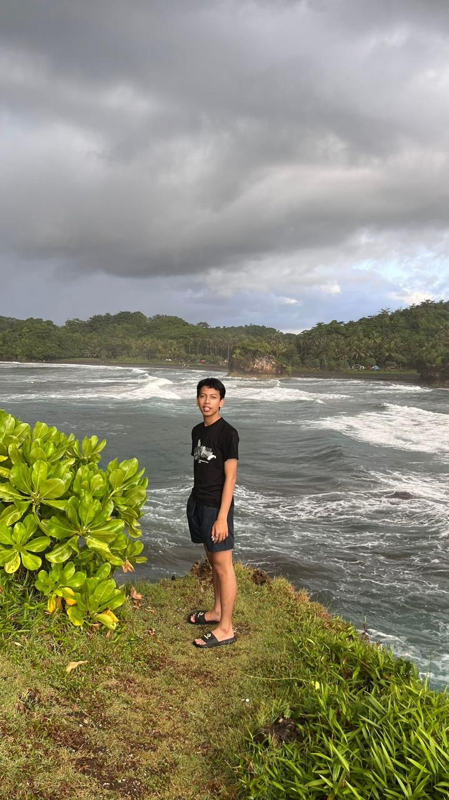
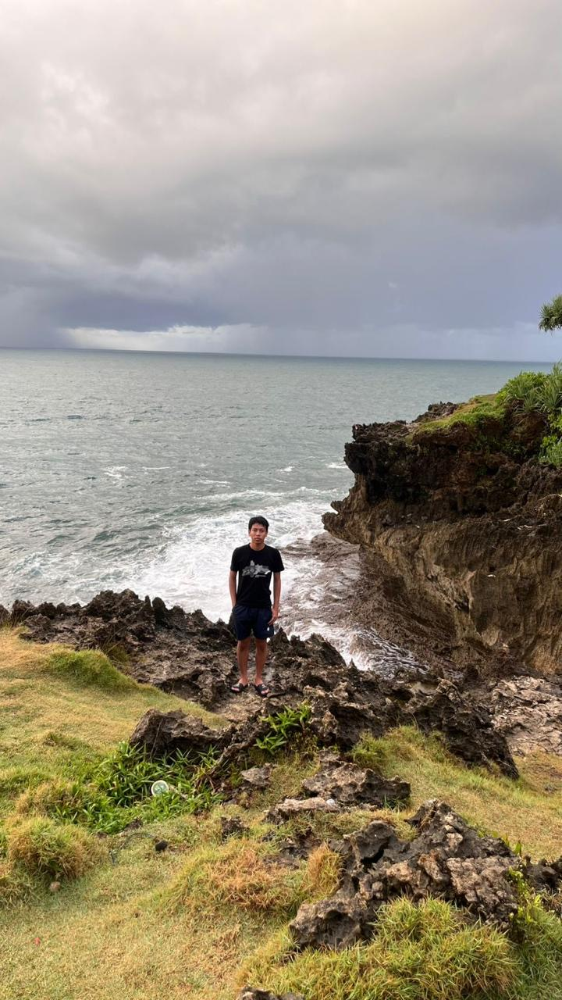
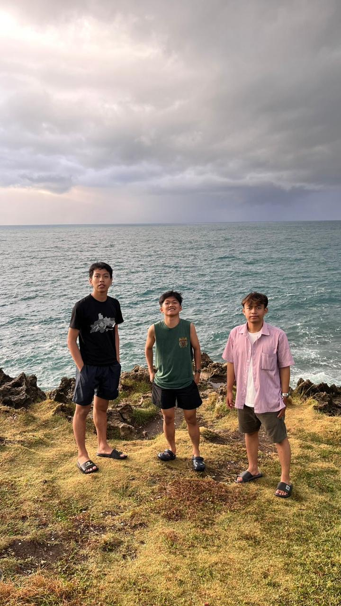
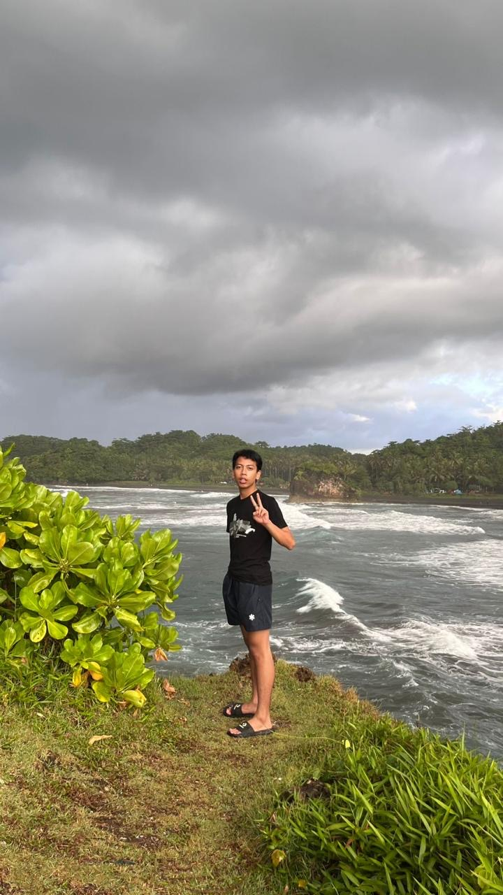
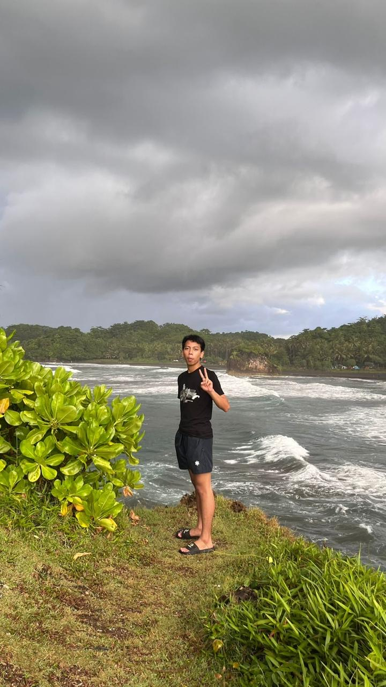
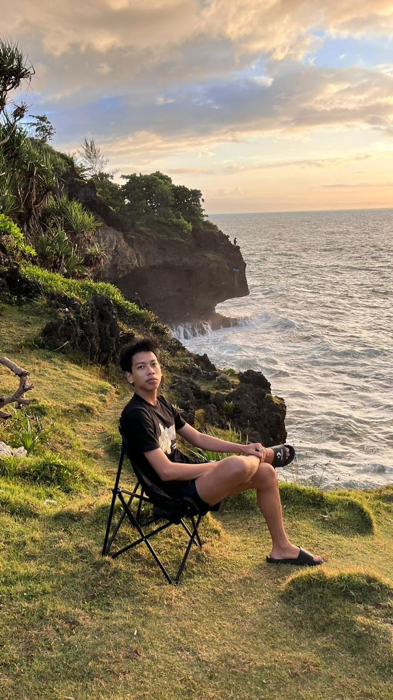
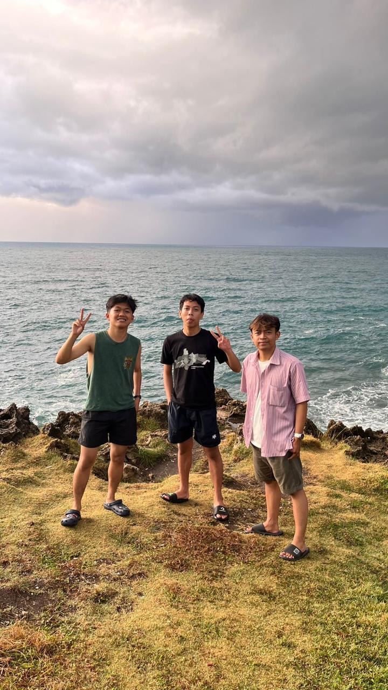

Surga tersembunyi di pesisir selatan Pangandaran, Jawa Barat

NPM: 2514101073 — Mahasiswa Informatika, Fakultas Teknik, Universitas Majalengka. Selamat datang di promosi wisata Pantai Batu Karas!






Saksikan keindahan Pantai Batu Karas:
Email: shohibu@example.com | Instagram: @shohibudro